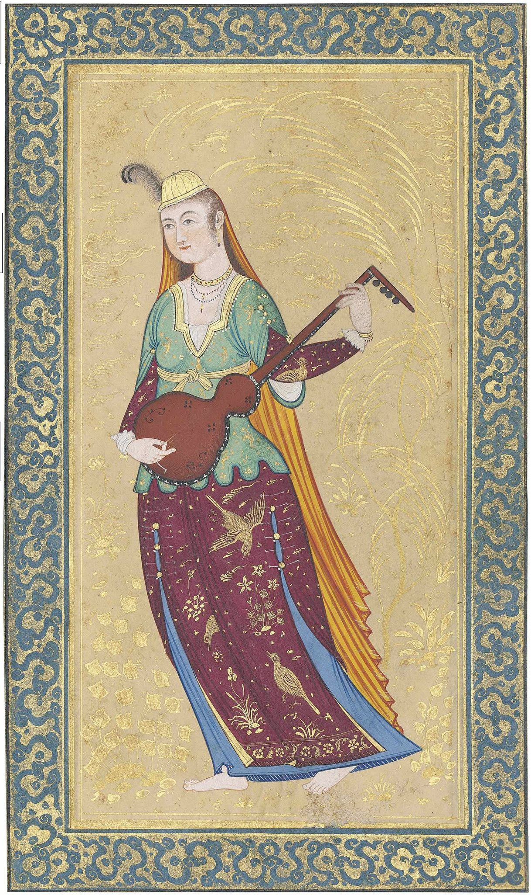

تنبور یا تمبور سازی است که دستهای بلند و کاسهای گلابی شکل دارد و معمولاً از چوب توت ساخته میشود. کاسه آن به دو صورت یک تکه (کاسهای) که از قدیم مرسوم بوده و چند تکهای (ترکهای یا چمنی) است که به تقلید از کاسه سه تار در دهههای اخیر ساخته شدهاست. طول این ساز در بین ۷۰ تا ۸۰ سانتیمتر و دارای سه سیم است، یکی واخوان و دو سیم اصلی. در زمان قدیم به گفته فارابی از یک یا دو سیم اصلی استفاده میشدهاست که اکنون به صورت سه سیم معمول است


سنتور ساز زهی موسیقی ایرانی است. فرهنگ دهخدا سنتور را اینگونه بازشناختهاست: از سازهای ایرانی به شکل ذوزنقه که دارای سیمهای بسیاری است و با دو زخمهٔ چوبی (مضراب) نواخته میشود. رایجترین نوع سنتور (۹ خرکی) دارای ۷۲ سیم است که به دستههای ۴ تایی و در ۱۸ دسته تقسیم میشود

چُگور، چوگور یا قُپوز سازی است از خانوادهٔ سازهای زهی مقید از ردهٔ تنبور که به آن دوتار نیز میگویند. چگور مرکب از یک قطعه چوب مجوف بر شکل عودی کوچک است که دارای پنج وتر میباشد.
ساختمان این ساز از یک کاسه طنینی گلابی شکل و دستهای مانند دسته تنبور تشکیل میشود. کاسه اش از سهتار بزرگتر است. نوعی از چگور، دو تار فلزی دارد و به همین سبب به آن دوتار نیز میگویند.
نواختن این ساز هنوز هممیان ترکمانان و ایرانیان آذری رایج است. نیز (دوتار و تنبور). چگور رایج در جمهوری آذربایجان و نواحی ترکنشین ایران، معمولاً نُهسیمه است و نسبتاً از دوتار و تنبور بزرگتر است.
چگور نزد عاشیقها در آذربایجان قُپوز (و ساز) نامیده میشود و سازی شبیه باغلاما است